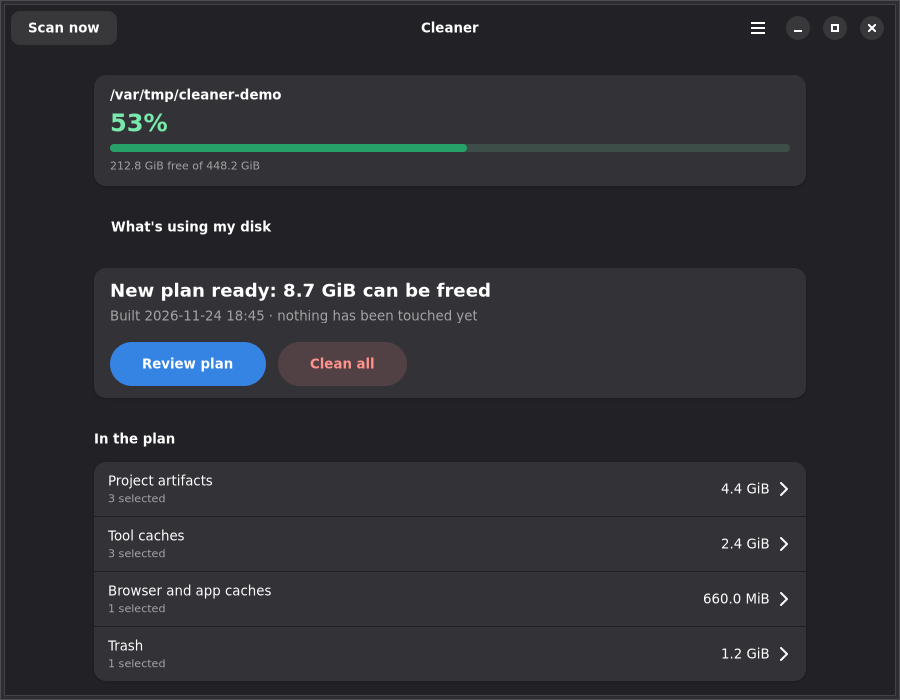
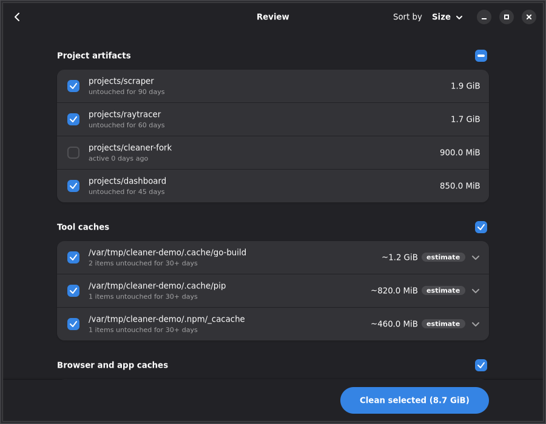

Delete only what you approve.
cleaner finds the disk space a developer machine wastes on build artifacts, tool caches, stale worktrees, Docker leftovers and old Nix generations. It shows you a plan, and deletes exactly what you tick. Nothing else.
nix run github:jj-scoll/cleaner
cleaner plan, cleaner show, cleaner apply.Nothing goes until you've read the plan.
Scanning and deleting are separate steps, with you in between. The nightly timer only ever plans and notifies. Deleting takes your approval, every time.
Plan
A nightly timer, or
cleaner plan, scans every enabled category and saves a plan. Each item has its size, the reason it's there and a fingerprint. Anything skipped is listed with why.Notify
If the pre-selected total crosses 1 GiB, you get a desktop notification. Clicking it opens the plan.
Review
Tick and untick in the GUI, or read every item with
cleaner show.Apply
Each approved item is checked again: it must still exist, still not be a symlink, still match its fingerprint, and its app must not be running. Anything that drifted is skipped, never silently re-planned.
Log
Every deletion and skip goes into a JSON-lines log, with the bytes actually freed.
- Never follows symlinks.Candidates are checked with
lstat; deletion uses its ownopenat/unlinkatwalker withO_NOFOLLOW, safe against symlink races. - Never crosses a mount point.Every level of a delete checks
st_dev, so a walk stays on its own filesystem. - Never deletes git-tracked files.Each candidate is checked against its repo's index.
- Re-validates at apply time.Anything that changed since the plan was made is skipped.
- Never runs as root.It refuses to start with euid 0, and never offers a file you couldn't delete yourself.
- Stays out of protected paths.
.git,vendored/, AI-tool state like~/.claude, and anything you add toprotect. - Reports honest numbers.Hardlinks count once. "Freed" is measured with
statvfsbefore and after, not estimated. - Read-only views stay read-only.The disk map, the large-and-old report and the low-space check have no path to deletion.
There is no trash and no undo. Approved items are deleted for real, so the review step is the safety net. Read the plan.
Docker and Nix deletions are permanent at the source too, and the review screen marks them that way.
What it finds
The whole list in one binary, instead of one tool per slice. A missing tool (docker, nix, go…) just means its category is skipped, with a reason.
- Pre-selected
- Pre-selected when its rule matches
- Never pre-selected
- Report only
- Project artifacts
target/,node_modules/,.venv/,.terraform/,build/,zig-out/and more, across 14 ecosystems from Rust and Node to Zig and Godot. Each counts only next to its project marker.- Project untouched for 30 days, or a finished worktree
- Tagged caches
- Any dir with a valid
CACHEDIR.TAG, except venvs and the uv cache. - Never
- Finished worktrees
- Linked git worktrees that are clean and merged, removed with
git worktree remove. - After 3 idle days
- Tool caches
- cargo, Go, npm, bun, pip, poetry, pnpm, Playwright, Cypress, Puppeteer, thumbnails, Terragrunt and OpenTofu, plus your own rules. The uv cache is pruned through
uvitself. - By age, per rule
- Browser and Electron caches
- Chrome, Chromium, Firefox, Slack, Teams, Discord, Claude and Cursor caches, plus Chromium's on-device AI model.
- Yes, but skipped at apply time while the app is running
- Docker permanent
- Stopped containers, dangling and unused images, unused volumes, buildx builders and old build cache, planned and deleted by ID.
- Stopped containers and build cache over 7 days, dangling images
- Nix permanent
- Old profile generations (kept by count, never age), dangling
resultlinks, idle devbox roots, a store GC, and system generations via onepkexecprompt. - Old generations and dangling links
- Folder rules
- Age, size and glob rules over any folder, like
~/Downloadsfiles older than 90 days. - Per rule
- Trash
- XDG Trash entries deleted more than 30 days ago, plus orphaned
.trashinfofiles. - Yes
- Large and old
- Anything over 1 GiB untouched for 90 days, with a git badge such as "unpushed commits".
- Report only. It can never be deleted from here.
A review screen, not a delete button.
The GTK4 and libadwaita app shows the same plan as the CLI. Settings edit the same config.toml you can edit by hand.


- Disk mapA drill-down of what's using your disk, with the rows already in the plan marked. Read-only: there is no delete button.
- Low-space alertEvery 10 minutes, one
statvfsper filesystem. Below 10% free, it builds a plan and sends one urgent notification. It never deletes. - CLI for everything
plan,show,apply,statusandlog, with--jsonoutput for scripting.
Install
Linux with a systemd user session. Tested daily on NixOS; reports from other distros are welcome.
Download the CLI
Each release has a single static binary for x86_64 and aarch64. Everything but the GUI, on any distro.
v=v0.1.0 t=x86_64-unknown-linux-musl # or aarch64-unknown-linux-musl
curl -LO https://github.com/jj-scoll/cleaner/releases/download/$v/cleaner-$v-$t.tar.gz
curl -LO https://github.com/jj-scoll/cleaner/releases/download/$v/cleaner-$v-$t.tar.gz.sha256
sha256sum -c cleaner-$v-$t.tar.gz.sha256
tar xzf cleaner-$v-$t.tar.gz
install -Dm755 cleaner-$v-$t/cleaner ~/.local/bin/cleaner
~/.local/bin/cleaner timer installWithout the GUI, the nightly notification tells you to run cleaner show instead of opening a review window.
With Nix, GUI included
nix run github:jj-scoll/cleaner # try it
nix profile install github:jj-scoll/cleaner
cleaner timer install # again after every upgradeThe timer units point at the package's store path, so re-run cleaner timer install after each nix profile upgrade.
With home-manager
The flake's module declares the timers, so they follow every rebuild.
# flake inputs
cleaner = {
url = "github:jj-scoll/cleaner";
inputs.nixpkgs.follows = "nixpkgs";
};
# home-manager config
imports = [ inputs.cleaner.homeManagerModules.default ];
services.cleaner = {
enable = true;
nightlyAt = "03:00"; # default
lowSpaceEvery = "10min"; # default; null turns the check off
};Build from source, and install the timers by hand
Requirements
A recent stable Rust toolchain (edition 2024). For the GUI: GTK 4.10 and libadwaita 1.6 or newer, plus pkg-config. Optional, each enabling its category: git, docker, nix, uv, go.
Build
# With Nix: the flake provides a dev shell with GTK and libadwaita
mkdir -p .gcroots
nix develop --profile .gcroots/devshell -c cargo build --release
# Without Nix, install the GTK development packages first
sudo dnf install gtk4-devel libadwaita-devel pkgconf-pkg-config # Fedora
sudo apt install libgtk-4-dev libadwaita-1-dev pkg-config # Debian 13 / Ubuntu 24.10+
sudo pacman -S gtk4 libadwaita pkgconf # Arch
cargo build --release
# CLI only, no GTK needed
cargo build --release --no-default-featuresInstall the timers
install -Dm755 target/release/cleaner ~/.local/bin/cleaner
~/.local/bin/cleaner timer installThis writes four user units and a .desktop file, all pointing at the binary's absolute path, then enables the timers. Neither timer deletes anything.
| Unit | Runs | Does |
|---|---|---|
cleaner.timer | daily at timer_time (03:00) | cleaner plan --notify: plans, notifies, deletes nothing |
cleaner-space.timer | every low_space.interval (10 min) | cleaner plan --if-low: checks free space, deletes nothing |
After an upgrade, run cleaner timer install again. cleaner timer uninstall removes everything it wrote.
Usage, configuration and the file layout are in the README.